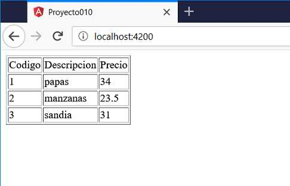

Cuando tenemos que hacer peticiones de archivos JSON a un servidor en Angular disponemos de una clase llamada 'HttpClient' que nos facilita ésta actividad.
Para hacer uso de la clase 'HttpClient' debemos importar el módulo 'HttpClientModule'.
Confeccionar una aplicación que recupere una respuesta en JSON de la dirección:
http://scratchya.com.ar/vue/datos.php
La estructura del archivo JSON es:
[
{
"codigo": 1,
"descripcion": "papas",
"precio": 12.33
},
{
"codigo": 2,
"descripcion": "manzanas",
"precio": 54
}
]
Mostrar en una tabla HTML todos los artículos recuperados.
Desde la línea de comandos de Node.js procedemos a crear el proyecto010:
f:\angularya> ng new proyecto010
Como primer paso importaremos el módulo HttpClientModule en el archivo app.module.ts:
import { BrowserModule } from '@angular/platform-browser';
import { NgModule } from '@angular/core';
import { AppComponent } from './app.component';
import {HttpClientModule} from '@angular/common/http';
@NgModule({
declarations: [
AppComponent
],
imports: [
BrowserModule,
HttpClientModule
],
providers: [],
bootstrap: [AppComponent]
})
export class AppModule { }
Implementaremos toda la lógica de lectura de datos en la componente por defecto que ha creado Angular CLI, luego en conceptos futuros veremos como distribuir las responsabilidades entre distintas clases.
import { Component } from '@angular/core';
import { HttpClient } from '@angular/common/http';
@Component({
selector: 'app-root',
templateUrl: './app.component.html',
styleUrls: ['./app.component.css']
})
export class AppComponent {
articulos = null;
constructor(private http: HttpClient) { }
ngOnInit() {
this.http.get("http://scratchya.com.ar/vue/datos.php")
.subscribe(
result => {
this.articulos = result;
},
error => {
console.log('problemas');
}
);
}
}
Importamos la clase HttpClient:
import { HttpClient } from '@angular/common/http';
Definimos un atributo llamado articulos con valor inicial null:
articulos = null;
En Angular podemos definir una propiedad en los parámetros del constructor que se inyecta cuando se crea la componente:
constructor(private http: HttpClient) { }
Luego la propiedad http que es de la clase HttpClient nos servirá para hacer la petición al servidor.
En el método onInit que se ejecuta una vez que el template de la componente está creado procedemos a recuperar del servidor los datos llamando al método get de la propiedad http:
this.http.get("http://scratchya.com.ar/vue/datos.php")
.subscribe(
result => {
this.articulos = result;
},
error => {
console.log('problemas');
}
);
A partir del objeto que retorna el método get llamamos al método subscribe y le pasamos dos funciones. La primera de esas funciones recibe como parámetro los datos recuperados del servidor.
Falta que veamos como en la vista procedemos a mostrar los datos recuperados 'app.component.html':
<div *ngIf="articulos!=null; else espera">
<table border="1">
<tr>
<td>Codigo</td><td>Descripcion</td><td>Precio</td>
</tr>
<tr *ngFor="let art of articulos">
<td>{{art.codigo}}</td>
<td>{{art.descripcion}}</td>
<td>{{art.precio}}</td>
</tr>
</table>
</div>
<ng-template #espera>Esperando datos...</ng-template>
Como las peticiones JSON a un servidor pueden demorarse un tiempo mediante la directiva *ngIf verificamos si la variable articulos tiene un null procedemos a mostrar el contenido de la etiqueta 'ng-template':
<div *ngIf="articulos!=null; else espera">
Para mostrar los datos de la propiedad 'articulos' lo hacemos como lo hemos visto anteriormente:
<table border="1">
<tr>
<td>Codigo</td><td>Descripcion</td><td>Precio</td>
</tr>
<tr *ngFor="let art of articulos">
<td>{{art.codigo}}</td>
<td>{{art.descripcion}}</td>
<td>{{art.precio}}</td>
</tr>
</table>
Si ejecutamos ahora el proyecto010:
ng server -o